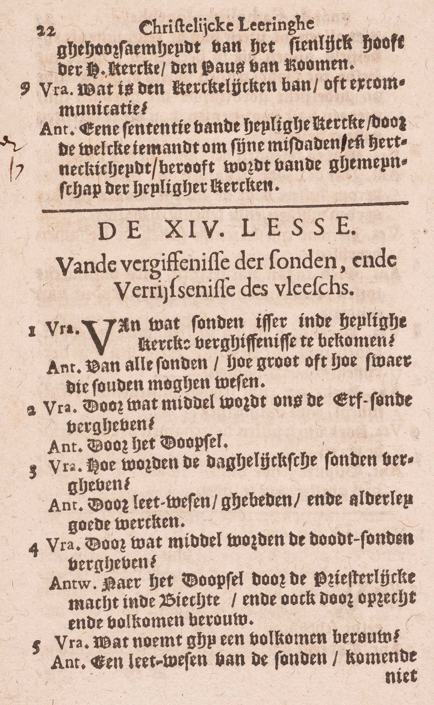
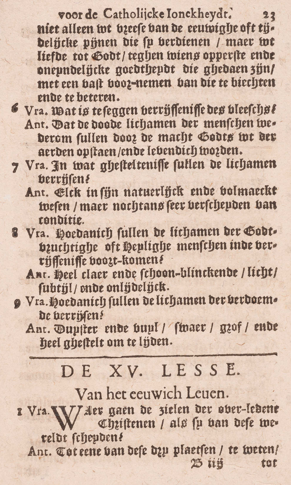

BEKNOPTE VERKLARING
van de
MECHELSE CATECHISMUS
ten gebruike van het middelbaar onderwijs
EERSTE DEEL
–
VEERTIENDE LES
Van de Vergiffenis van de zonden en de Verrijzenis van het lichaam
| Vergiffenis van de zonden | Zonden die vergeven worden | Van welke zonden is er in de Heilige Kerk vergiffenis te bekomen? | ||||||
| Middelen tot vergeving van de zonden | Door wat middel wordt ons de erfzonde vergeven? | |||||||
| Hoe worden de dagelijkse zonden vergeven? | ||||||||
| Door wat middel worden de doodzonden vergeven? | ||||||||
| Wat noemt gij een volkomen berouw? | ||||||||
| Verrijzenis van het lichaam | Zin van dit artikel | Wat is te zeggen: Verrijzenis van het lichaam? | ||||||
| Gesteltenis waarin de lichamen zullen verrijzen | in ’t algemeen | In wat gesteltenis zullen de lichamen verrijzen? | ||||||
| in ’t bijzonder | De Heiligen | Hoedanig zullen de lichamen van de godvruchtige of heilige mensen in de verrijzenis voorkomen? | ||||||
| De verdoemden | Hoedanig zullen de lichamen van de verdoemden verrijzen? | |||||||
Van welke zonden is er in de Heilige Kerk vergiffenis te bekomen?
Van alle zonden, hoe groot of hoe zwaar die ook zouden mogen wezen
  V. In de H. Kerk: voor de leden van de H. Kerk; wie immers geenszins tot de H. Kerk behoort, kan onmogelijk de vriend van God zijn of zalig worden.
A. Van alle zonden, zonder één uitzondering, hoe groot of hoe zwaar die ook zouden mogen wezen: ’t is gelijk van welke soort en hoe menigvuldig zij zijn, en hoe dikwijls men er zou in hervallen wezen.
Door wat middel wordt ons de erfzonde vergeven?
Door het Doopsel
A. De erfzonde (37ᵉ les, 4ᵉ v., 6ᵉ les, 3ᵉ v. en 7ᵉ les, 3ᵉ v.) wordt vergeven door het Doopsel: door het Sacrament van het Doopsel, dat soms kan vervangen worden door het doopsel van begeerte of door het doopsel van bloed (30ᵉ les, 2ᵉ v.).
Hoe worden de dagelijkse zonden vergeven?
Door leedwezen, gebeden en allerlei goede werken
A. De dagelijkse zonden (37ᵉ les, 6ᵉ v.) worden vergeven door drie middelen:
1° Door leedwezen: het leedwezen of het berouw bestaat in een spijt of een droefheid van God door onze zonden vergramd te hebben. Men bemerke dat het spijt de zonden als zonden moet betreffen en wel onze zonden, niet die van anderen.
Om tot de vergiffenis van de zonden te dienen, moet alle berouw A) op een reden rusten die God aangaat. Nu, de redenen van die aard zijn tweeërlei: a) die van de onvolmaakte liefde tot God, te weten: de schandelijkheid van de zonde door dewelke wij die God beleedigen aan wie wij, wegens zijn onmeetbare weldaden, de grootste dankbaarheid verschuldigd zijn, de hoop van de goddelijken loon en de vrees van de goddelijke straffen; b) die van de volmaakte liefde tot God, namelijk, de oneindige volmaaktheden Gods. Steunt het berouw op geen van deze redenen, komt het b.v. enkel uit het verlies of de hinder die men, tengevolge van de zonde, in zijn eer of zijn fortuin geleden heeft, dan gaat het God niet aan, dan heeft men geen spijt meer van God vergramd te hebben.
- Bovennatuurlijk zijn: door de gratie verwekt en door het Geloof verlicht zijn: bij de gelovigen wie ’t berouwt God door de zonde vergramd te hebben, is het leedwezen doorgaans door het Geloof verlicht, daar geheel hun kennis van God en van hun einde uit de Catechismus geput is; en, wanneer de mens volgens zijn Geloof handelt, dan vergunt God hem altijd de nodige dadelijke gratiën.
Het berouw nu dat de twee vermelde conditiën vervult, is onvolmaakt of onvolkomen, als het op een reden van de onvolmaakte liefde, en volmaakt of volkomen, als het op de reden van de volmaakte liefde gegrond is (20ᵉ les. v. 8.).
Het onvolmaakt berouw is op zich zelf voldoende voor de vergiffenis van de dagelijkse zonden; het moet zich echter uitstrekken tot al de dagelijkse zonden die geheel van dezelfde soort zijn.
2ᵉ Door gebeden: met de vergiffenis van onze zonden door gebeden van Gods barmhartigheid af te smeken.
3ᵉ Door allerlei goede werken: goede werken zijn: a) al de werken die wij doen om de geboden van God en van de H. Kerk te onderhouden: b) al de van God aangeprezene werken, die wij uit vrijen wil volbrengen, als bidden, vasten, almoezen doen; c) al onze dagelijkse werken, mits zij gedaan zijn om de wil of de raden Gods te volgen.
De gebeden en goede werken verwerven ons vergiffenis van de dagelijkse zonden, 1° onrechtstreeks, met ons de gratie van een genoegzaam berouw te bekomen, en 2° rechtstreeks, ten minste waarschijnlijk, met ons, uit hoofde van de aangewonnen heiligmakende gratie, (39ᵉ les, 7ᵉ v.) te zuiveren van de dagelijkse zonden waarover wij wel eenig, doch uit zich zelf slechts onvoldoend leedwezen hebben; het is immers natuurlijk dat God, als Hij ons in inniger vriendschap aanneemt, ons die kleine zonden vergeeft, waarover wij eenig berouw gevoelen.
Het is klaarblijkend, dat de dagelijkse zonden nooit vergeven worden zonder de doodzonden waar men plichtig aan is, en dat de middelen, hieronder voor deze laatste zonden aangeduid, ook voor de eerste gelden.
Door wat middel worden de doodzonden vergeven?
Na het Doopsel, door de priesterlijke macht in de Biecht, en ook door een oprecht en volkomen berouw
A. Er zijn dus na het Doopsel: voor de vergiffenis van de doodzonden die na het Doopsel bedreven zijn, twee middelen:
1° De priesterlijke macht in de Biecht: de absolutie van de priester in het Sacrament van de Biecht;
2° Een oprecht en volkomen berouw, zonder de absolutie van de priester in de Biecht.
Voor de doodzonden die vóór het Doopsel gedaan zijn, gelden de middelen dienstig tot de vergiffenis van de erfzonde, want die doodzonden moeten samen met de erfzonde vergeven worden.
Wat noemt gij een volkomen berouw?
Een leedwezen van de zonden, komende niet alleen uit vrees van de eeuwige of tijdelijke pijnen die zij verdienen; maar uit liefde tot God, tegen wiens opperste en oneindige goedheid zij gedaan zijn; met een vast voornemen van die te biechten en zich te beteren
A. Een leedwezen van de zonden: een spijt of droefheid van God door de zonde vergramd te hebben, a) komende niet alleen, gelijk het onvolmaakt berouw, uit vrees van de eeuwige of tijdelijke pijnen die zij verdienen, óf uit de hoop van de goddelijken loon, óf uit de schandelijkheid van de zonde; maar uit liefde tot God, tegen wiens opperste en oneindige goedheid zij gedaan zijn: maar uit liefde tot God, die, om zijn opperste en oneindige volmaaktheid, geheel onze liefde waardig is, en tegen wie wij nochtans gezondigd hebben, b) gepaard gaande met een vast voornemen: met de vasten wil van die (doodzonden) te biechten, — en zich te beteren: en voortaan alle doodzonden te vluchten, alsook de dagelijkse zonden, waarover wij leedwezen hebben.
Van de redenen van de onvolmaakte liefde vermeldt de Catechismus enkel de vrees van de goddelijke straffen, omdat deze reden op de mensen meest indruk maakt.
De noodzakelijkheid van, nopens het biechten van de doodzonden, een vast voornemen te maken, vloeit uit het gebod van Christus, krachtens hetwelk alle doodzonden in de biecht moeten beleden worden. Wat echter het vast voornemen betreft van zich te beteren, dat ligt in de natuur zelve van het leedwezen besloten: wie de zonde rechtzinnig verfoeit, die verfoeit ze niet alleen voor het verledene, maar ook voor het toekomende.
Men neme in acht, dat het volmaakt berouw, om tot de vergiffenis van de doodzonden dienstig te zijn, zich moet uit strekken tot al de doodzonden waar men plichtig aan is, daar iedere doodzonde ons ten volle vijanden van God maakt.
Wat is te zeggen: Verrijzenis van het lichaam?
Dat de dode lichamen van de mensen door de macht Gods wederom uit de aarde zullen opstaan en levend worden
A. De woorden: de dode lichamen van de mensen zijn de verklaring van het woord lichaam, en het Symbolum zegt: verrijzenis van het lichaam, en niet: verrijzenis van de mensen, om uit te drukken, dat de mens alleen volgens zijn lichaam sterft. Het volgend deel van het antwoord: zullen wederom uit de aarde opstaan en levend worden, dient tot uitlegging van het woord verrijzenis. Dus hestaat de verrijzenis van de dode lichamen van de mensen hierin, dat diezelfde lichamen die gestorven en in aarde veranderd zijn, door vereniging met dezelfde ziel van welke de dood hen gescheiden heeft, zullen hervormd en wederom levend worden. Verrijzenis dan is niet levendwording van een nieuw wezen, maar herleving van een wezen dat reeds het leven genoten, maar het door de dood verloren heeft. De dode lichamen zullen verrijzen, niet door de krachten van de natuur, maar door de macht Gods: door een bijzondere werking van God.
De verrijzenis zal plaats grijpen onmiddellijk vóór het laatste oordeel.
In wat gesteltenis zullen de lichamen verrijzen?
Elk in zijn natuurlijk en volmaakt wezen, maar nochtans zeer verscheiden in hoedanigheid
A. Over de algemenen staat van de verrezene lichamen leren wij hier drie dingen: elk zal verrijzen:
1° In zijn natuurlijk wezen: ieder lichaam zal van dezelfde aard, van dezelfde gedaante en vorm zijn als vroeger op aarde;
2° In zijn volmaakt wezen: ieders lichaam zal noch jong noch oud voorkomen, maar die vorm en die grootte hebben, welke het, volgens zijn aard, in het tijdstip van volwassenheid moest hebben; daarenboven zal dat van de gelukzaligen van alle gebreken vrij wezen. Of er in de lichamen van de verdoemden natuurlijke gebreken zullen zijn, dat weten wij niet met volle zekerheid.
3° Zeer verscheiden in hoedanigheid: buiten die twee gemeene gesteltenissen, zullen vele bijzondere en gewichtige hoedanigheden de een wel, de anderen niet toebehooren.
Hoedanig zullen de lichamen van de godvruchtige of heilige mensen in de verrijzenis voorkomen?
Heel klaar en schoonblinkend, licht, subtiel en onlijdelijk
A. De lichamen van de godvruchtige of heilige mensen zullen voorkomen.
1° Heel klaar en schoonblinkend: met de grootsten glans versierd, met luister en schoonheid bekleed, in- en uitwendig met licht omgeven en gans doorschijnend ;
2° Licht: zonder moeite of arbeid en sneller dan de bliksem zullen zij zich tot de afgelegenste plaatsen, van de een kast van de hemel tot de anderen, van de hemel tot op de vernieuwde aarde, en van de een kant van deze aarde tot de anderen begeven;
3° Subtiel: zij zullen leven als geesten, zonder eten, drinken of slapen, en zo volmaakte werktuigen van de ziel zijn; zij zullen ook, als het nodig of betamelijk zal wezen, de andere stoffelijke schepselen kunnen doordringen zonder daardoor iets te hinderen of enigszins gehinderd te worden.
4° Onlijdelijk: zij zullen vrij zijn van alle gebreken, van alle pijn en van de dood; zelfs niet meer kunnen gehinderd worden, niet meer kunnen lijden of sterven.
Hoedanig zullen de lichamen van de verdoemden verrijzen?
Duister en vuil, zwaar, grof en heel gesteld om te lijden
A. De lichamen van de verdoemden zullen verrijzen:
1° Duister en vuil: in plaats van, gelijk die van de gelukzaligen, klaar en schoonblinkend te zijn, zullen zij van alle schoonheid beroofd wezen en afschuwelijker voorkomen dan het afschuwelijkste dood lichaam;
2° Zwaar: in plaats van licht te zijn, zullen zij zich maar met de grootste moeite en het hevigste lijden kunnen bewegen;
3° Grof: in plaats van subtiel te zijn, zullen zij, hoewel onsterfelijk, in de hoogsten graad door honger, dorst en slaapzucht gepijnigd worden;
4° Heel gesteld om te lijden: in plaats van onlijdelijk te zijn, zullen zij door Gods almacht geschikt en gesteld wezen om eeuwig de grootste pijnen te kunnen lijden en aan het lijden ten uiterste gevoelig te blijven.
VRAGEN
Welke artikelen van het Symbolum worden hier uitgelegd? — Hoe wordt de les verdeeld? — Wat onderzoekt de Catechismus in ieder deel?
Waarom voegt de Catechismus bij zijn vraag: Van welke zonden is er vergiffenis te bekomen, de woorden: in de H. Kerk? — Zijn er zonden van welke er geen vergiffenis te bekomen is? — Bewijs dit door de woorden van de Catechismus.
Is het Sacrament van het Doopsel de enige middel tot de vergiffenis van de erfzonde? — Waardoor kan het Sacrament van het Doopsel a) bij degenen, die tot de jaren van verstand niet gekomen zijn, en b) bij de anderen, vervangen worden? — Waarin bestaan die middelen welke het Doopsel kunnen vervangen?
Hoeveel en welke middelen om de vergiffenis te bekomen van de dagelijkse zonden, stelt de Catechismus voor? — Wat verstaat men door leedwezen over de zonden? — Welke hoedanigheden moet het leedwezen hebben, om de vergiffenis van de dagelijkse zonden te bekomen? — Hoedanig moeten de gebeden zijn, om die vergiffenis te bekomen? — Wat verstaat men door goede werken, en hoedanig moeten zij wezen tot datzelfde uitwerksel? — Op welke wijzen bekomen wij door de gebeden en de goede werken vergiffenis van de dagelijkse zonden? — Zijn er buiten deze middelen nog andere, om vergiffenis van de dagelijkse zonden te krijgen?
Zeg, met de woorden van de Catechismus, welke middelen er bestaan om vergiffenis te bekomen. van de doodzonden, die na het Doopsel gedaan zijn. — Leg die middelen een weinig uit. — Welke middelen bestaan er voor de vergiffenis van de doodzonden, die bedreven zijn vóór het Doopsel?
Zeg, met de woorden van de Catechismus, welke beweegreden niet voldoende is en welke er vereist wordt om een volmaakt berouw te hebben. — Leg het antwoord in’t kort uit. — Zeg ook met de woorden van de Catechismus, waarmede het volmâakt berouw moet gepaard gaan om goed te zijn. — Geef er de verklaring van. — Waarom moet het berouw gepaard gaan met het vast voornemen qd) van de doodzonden te biechten, en 5) van zich te beteren? — Tot welke zonden moet het volmaakt leedwezen, om de vergiffenis van de doodzonden te bekomen, zich uitstrekken en waarom? — Welke voorwaarden moet alle berouw vervullen om dienstig te zijn tot de vergiffenis van de zonden? — Welk verschil is er tussen het onvolmaakt en het volmaakt berouw, ten opzichte a) van de beweegreden, en b) van de uitwerksels?
Wat betekenen in het artikel van het Symbolum: Verrijzenis van het lichaam, het woord lichaam, en het woord verrijzenis? — Waarin bestaat eigenlijk de verrijzenis van een wezen? — Zeg, met de woorden van de Catechismus, door welke macht de verrijzenis van het lichaam zal geschieden? — Leg de woorden uit.
Wat leert ons de Catechismus nopens de algemene gesteltenis van de verrezen lichamen? — Leg ieder punt uit.
Hoeveel en welke hoedanigheden zullen de lichamen van de gelukzaligen hebben? — Verklaar ieder van deze hoedanigheden,
Hoeveel en welke hoedanigheden zullen de lichamen van de verdoemden hebben? — Hoe zijn deze hoedanigheden aan die van de lichamen van de gelukzaligen tegenovergesteld? — Leg ieder van die hoedanigheden uit.